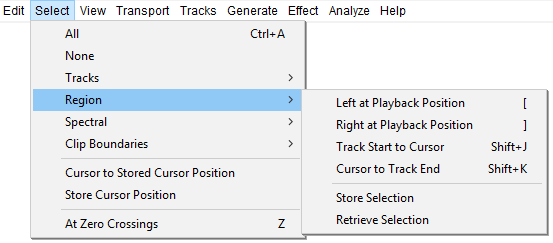

Select Menu: Region
- Click, or hover, on any menu item in the image to read about that command. Skip the image
- 
Left at Playback Position [
When playing or recording: Sets the left boundary of a potential selection by moving the cursor to the current position of the green playback cursor (or red recording cursor). The selection can then be drawn by using "Right at Playback Position" (below).
When there is no audio playing or recording: Opens the "Set Left Selection Boundary" dialog. This is useful for keyboard users or for time-exact manipulation of the selection instead of using Selection Toolbar. Move the selection boundary dialog's time digits backwards to create a selection leftwards from the cursor position or to extend the current selection leftwards. Move the time digits forwards to move the cursor forwards to an exact point or to contract the current selection from the left. See "Creating selections at an exact time" for more details.
Right at Playback Position ]
When playing or recording: Sets the right boundary of the selection, thus drawing the selection from the cursor position to the current position of the green playback cursor (or red recording cursor). This is a quick way to mark a selection for future editing while playing or recording. Selections can be labeled while playing or recording using or shortcut Ctrl + B.
When there is no audio playing or recording: Opens the "Set Right Selection Boundary" dialog. Move the dialog's time digits forwards to create a selection rightwards from the cursor position or to extend the current selection rightwards. Move the time digits backwards to move the cursor backwards to an exact point or to contract the current selection from the right.
Track Start to Cursor Shift + J
Selects a region in the selected track(s) from the start of the track to the cursor position (or extends the current selection so that it starts from the start of the track).
Cursor to Track End Shift + K
Selects a region in the selected track(s) from the cursor position to the end of the track (or extends the current selection so that it ends at the end of the track).
Store Selection
Stores the current position of the selection region or cursor, as observed on the Timeline. The position of this region or cursor can then be recalled by using Retrieve Selection (see below). Using this command again will overwrite the previously stored position information.
The position is saved in memory for each project. Therefore using Retrieve Region will not have any effect in another project unless you have already used Store Region in that project. When you close a project, its stored region is discarded.
The Store Region command is grayed-out if there are no audio tracks.
Retrieve Selection
Moves the selection region or cursor to the position stored by the last Store Selection command (see above). If a region is retrieved, this is only explicitly placed inside those tracks which are currently selected.
|